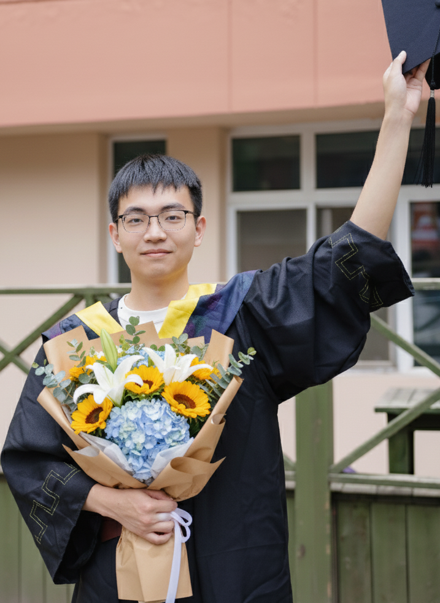
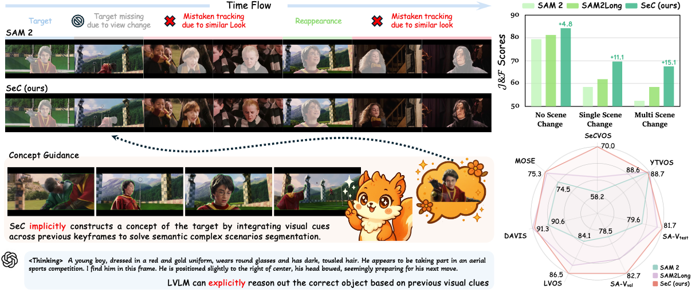
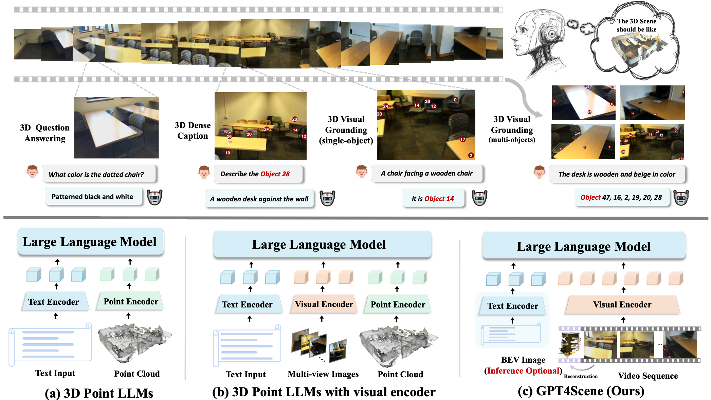
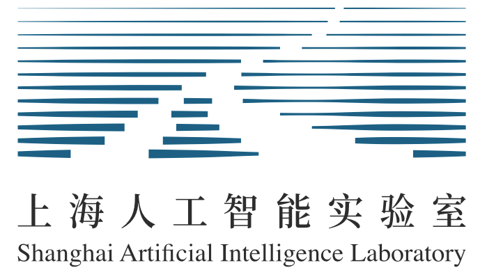

Zhixiong ZhangPh.D. Student
Shanghai Jiao Tong University & Shanghai Innovation Institute
|
 |
Biography
I am a 1st year Ph.D. student at Shanghai Jiao Tong University, supervised by Jiaqi Wang. Prior to this, I received my B.E. degree in Artificial Intelligence at Harbin Institute of Technology in 2025.
My current research focuses on:
- Large Vision Language Models: Visual-Spatial Intelligence, Visual Question-Answering, Visual Grounding, ...
- Vision Foundation Models: Image / Video Segmentation, Visual Perception, ...
Please feel free to contact me if you're interested in relevant research or would like to discuss potential collaborations!
News
- [10/2025] Our SeC served as the foundational solution for the majority of teams in the 7th LSVOS Challenge.
- [05/2025] SongGen is accepted by ICML 2025.
Publications [Full list: Google Scholar]
( * equal contribution, † corresponding authors )(Co-) First Author Publications
|  |
SeC: Advancing Complex Video Object Segmentation via Progressive Concept Construction
Zhixiong Zhang*, Shuangrui Ding*, Xiaoyi Dong†, Songxin He, Jianfan Lin, Junsong Tang, Yuhang Zang, Yuhang Cao, Dahua Lin, Jiaqi Wang† Arxiv 2025 | Paper | Project Page |  | |

|
|  |
GPT4Scene: Understand 3D Scenes from Videos with Vision-Language Models
Zhangyang Qi*, Zhixiong Zhang*, Ye Fang, Jiaqi Wang†, Hengshuang Zhao† Arxiv 2025 | Paper | Project Page |  | |

|
Co-Author Publications
-
SongGen: A Single Stage Auto-regressive Transformer for Text-to-Song Generation
Zihan Liu, Shuangrui Ding, Zhixiong Zhang, Xiaoyi Dong, Pan Zhang, Yuhang Zang, Yuhang Cao, Dahua Lin, Jiaqi Wang†
ICML 2025 | Paper | Project Page ||
-
VLN-R1: Vision-Language Navigation via Reinforcement Fine-Tuning
Zhangyang Qi, Zhixiong Zhang, Yizhou Yu†, Jiaqi Wang†, Hengshuang Zhao†
Arxiv 2025 | Paper | Project Page ||
-
CODA: Coordinating the Cerebrum and Cerebellum for a Dual-Brain Computer Use Agent with Decoupled Reinforcement Learning
Zeyi Sun, Yuhang Cao, Jianze Liang, Qiushi Sun, Ziyu Liu, Zhixiong Zhang, Yuhang Zang†, Xiaoyi Dong, Kai Chen, Dahua Lin, Jiaqi Wang†
Arxiv 2025 | Paper ||


Experiences
|  |
Shanghai AI Laboratory
Research Intern Topic: Large Vision Language Models Mentor: Dr. Jiaqi Wang |
Shanghai, China
Aug, 2024 - Present |
Honors & Awards
| HIT Excellent Bachelor's Thesis, Harbin Institute of Technology | 2025 |
| Heilongjiang Provincial Excellent Graduate, Education Department of Heilongjiang Province | 2025 |
| National Scholarship × 2, Ministry of Education of PRC | 2022, 2024 |
| Xiaomi Special Scholarship (¥ 20,000), Harbin Institute of Technology | 2023 |
| Heilongjiang Provincial Merit Student, Education Department of Heilongjiang Province | 2024 |
| National 1st Prize, China Collegiate IoT Design Competition | 2023 |
| Meritorious Winner, Mathematical Contest in Modeling | 2023 |